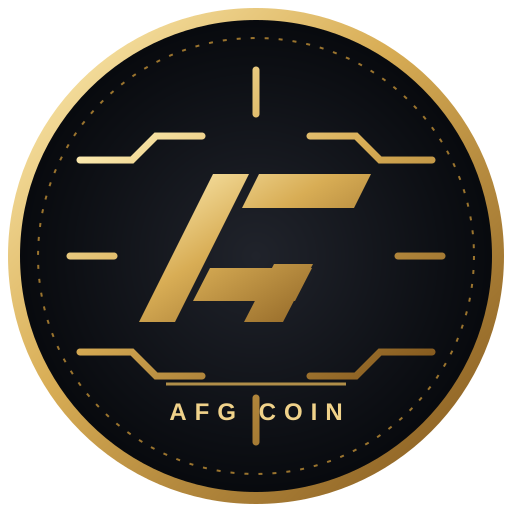

Brand, logo, website and public documentation.
SOLANA • COMMUNITY • TRANSPARENCY

$AFG
From Afghanistan
to the World.
A community-led meme token concept built around identity, creativity and transparent participation.
Concept project — no token sale, market, listing or investment return is promised.
TOKEN OVERVIEW
Simple. Transparent. On Solana.
TOKENAFG
TARGET SUPPLY1,000,000,000
NETWORKSolana
DECIMALS6
The token has not yet been deployed to Mainnet. The final mint address will be published here only after on-chain verification.
ROADMAP
Build in public.
Devnet token creation, supply checks and authority review.
Independent review, metadata validation and transparent disclosures.
Mainnet launch only after costs, legal considerations and liquidity plan are clear.
COMMUNITY PRINCIPLES
No hype. No false promises.
AFG is a meme-token concept, not equity, a deposit, or a claim on profits. Crypto assets are risky and can lose all value. Participate only after understanding the risks.